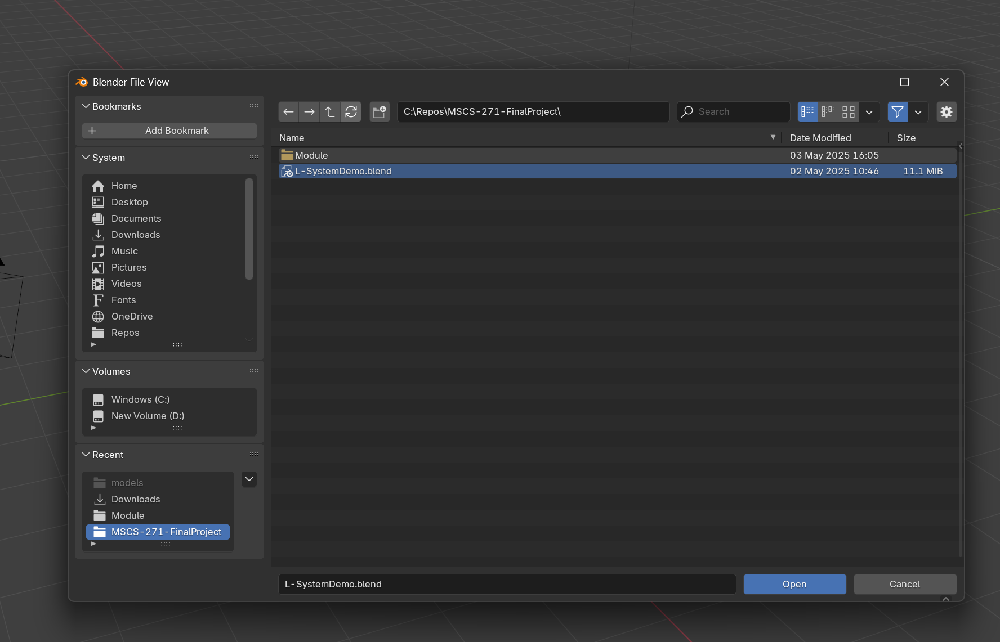
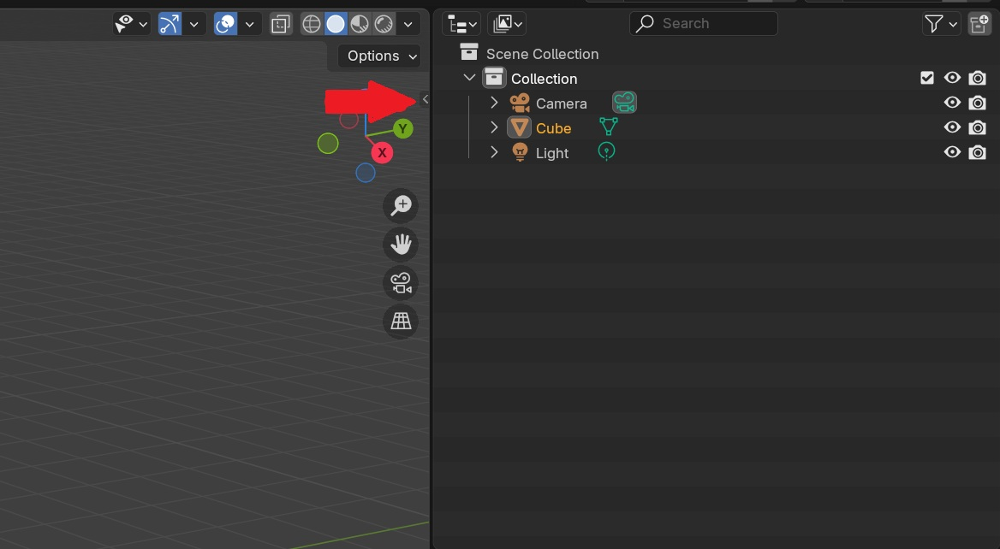
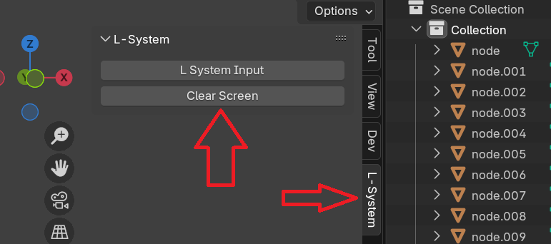

Python
Co-developed with two others as our Formal Language and Finite Automata final project
------------------------
Programmed in python, connects to the 3d modelling software Blender to procedurally generate a "tree" using an L-System input
Techincal explanation for Tree creation:
Rotation Matrices:
RU(α) =
[ (cos α, sin α, 0),
(− sin α, cos α, 0),
(0, 0, 1)]
Built in Demo tree uses the input:
F[+F]/F[-F]*F^F!F[+F[+F]/F[-F]*F^F!F]/F[+F]/F[-F]*F^F!F[-F[+F]/F[-F]*F^F!F]*F^F!F[+F]/F[-F]*F^F!F[+F[+F]/F[-F]*F^F!F]/F[+F]/F[-F]*F^F!F[-F[+F]/F[-F]*F^F!F]*F^F!F[-F[+F]/F[-F]*F^F!F]/F[+F]/F[-F]*F^F!F[+F[+F]/F[-F]*F^F!F]/F[+F]/F[-F]*F^F!F[-F[+F]/F[-F]*F^F!F]*F^
The Visual Studio Code extension "Blender Development" by Jacques Lucke is required to properly connect the program to Blender
Open the folder titled Module in VS Code and open "inputbox.py", Press Ctrl+Shift+P and run "Blender: Start" pick your version of Blender to open
Open the given demo tree in L-SystemDemo.blend or create your own
press Ctrl+Shift+P again and run "Blender: Run Script"
 Follow the images to open the L-System interaction screen, Either clear the current tree or input your own L-System to generate a fresh tree!
Email: Drakefmitchell@gmail.com
LinkedIn: https://www.linkedin.com/in/drake-mitchell/
GitHub: https://github.com/DrakeMitchell
Itch.io: https://severedx.itch.io/